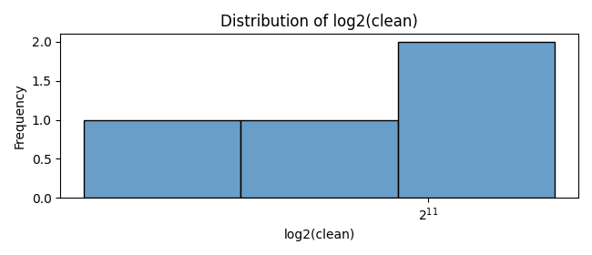
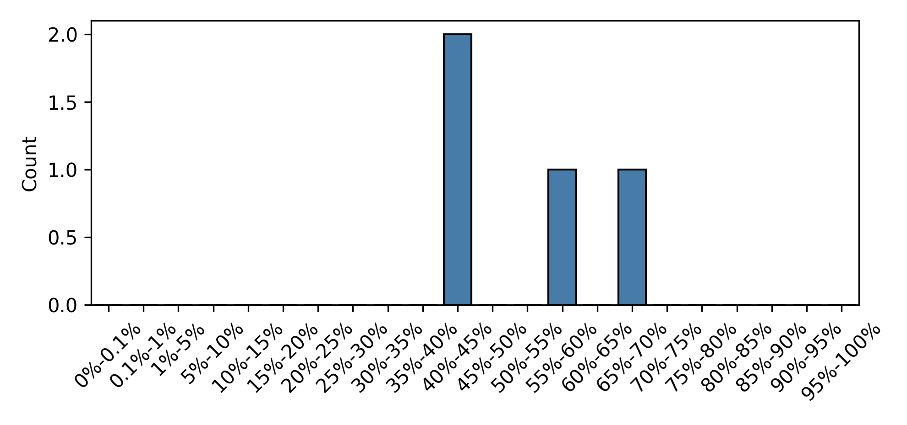
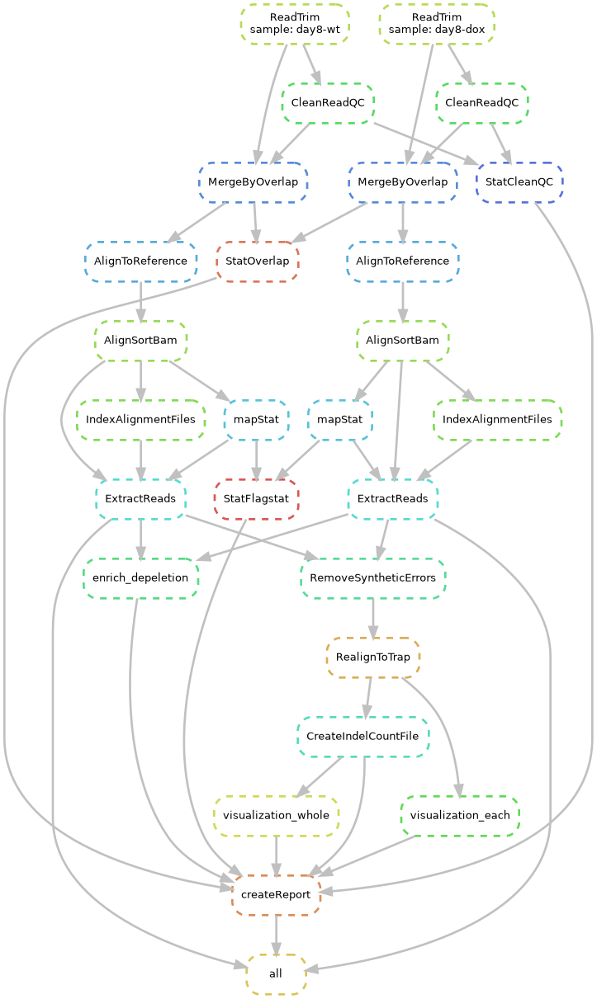

4
100.0%recall of gRNAs with reads >=50 within 12K library
0.53
average indel efficiency
0
enrichment and depeltions
Clean Reads distribution
Indel frequency distribution
This is a brief introduction of the pipeline.
The example workflow of this pipeline:
By utilizing this workflow, you can seamlessly and effortlessly analyze data derived from SURRO-Seq sequencing with a single click. The example workflow is comprehensively detailed in the figure on the left. This workflow is based on Snakemake, and all required software is containerized with Singularity, making it fully accessible for users to download and use. Therefore, all you need to do is install Snakemake locally and download this workflow along with its dependencies to obtain the analysis results effortlessly. Additionally, this workflow includes a concise report file generated for each sample group, allowing you to conveniently review quality control, sequencing, alignment, and editing efficiency of each library.
Firstly, download the whole workflow
git clone https://github.com/panxiaoguang/SurroNPROT.git
cd WorkFlow
then, download all softwares from list listed in download files in this directory and put them in a directory called softwares
then run:
snakemake -s surroseq.smk --cores 4 --use-singularity --singularity-args "--cleanenv --no-home"
Please find the file called config.yaml in config dir and read them carefully,if you use a special library design such as surro-off-target, please modify some parameters as you want.